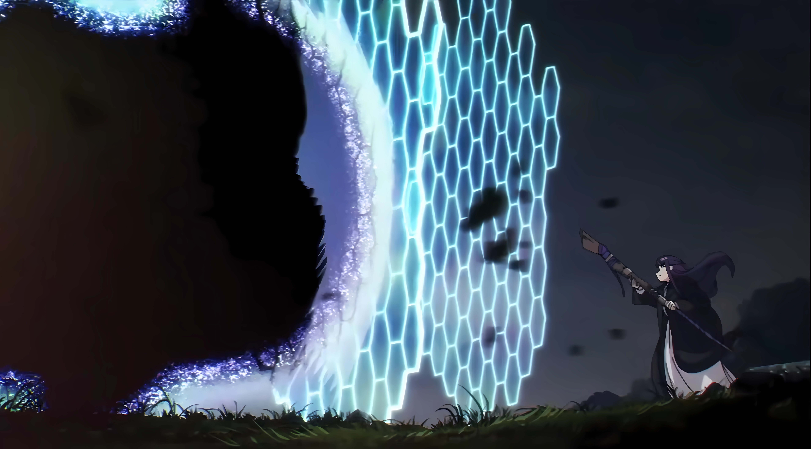

让物体漂浮的魔法
操纵物体在空中漂浮移动。
芙莉莲和菲伦利用此魔法完成了采收南瓜田南瓜、清除海岸船只残骸和清理阻碍道路的滑坡碎石等委托。
开出花田的魔法
在一定范围内开出一片花田，没有见过的品种的花无法开出。
伏拉梅最喜欢的魔法，最后教给芙莉莲的非战斗用魔法，要求芙莉莲在自己的墓前使用。
芙莉莲在和勇者辛美尔一行的冒险中多次使用，还因此获得了喜欢花的辛美尔的夸奖。芙莉莲遇见在森林里迷路的幼年辛美尔时就曾使用过此魔法。
寻找遗失饰品的魔法
使饰品发出耀眼光芒，从而帮助寻找。
芙莉莲等人于邦德地区透过饰品商人协助穿越森林期间击退魔物，饰品商人为感谢芙莉莲等人而赠送的魔法。
放出火焰的魔法
放出火焰，可点燃可燃物生火。
芙莉莲和菲伦在中央诸国格兰兹海峡清理海岸时使用此魔法烧毁杂物。
芙莉莲一行在北方诸国蒂克地区遇到暴风雪，在山脚的避难小屋使用此魔法生火取暖。
杀人魔法
腐败贤者古瓦尔创造的贯通魔法，曾经可破坏人类的防御魔法和富魔法抗性的装备，造成附近地区四成冒险者和七成魔法使的死亡。
在古瓦尔被封印的80年期间由包含芙莉莲在内的大陆魔法使们研究解析，编入人类的魔法体系，并且推动了普通攻击魔法和防御魔法的发展。

防御魔法
受腐败贤者古瓦尔杀人魔法原理启发而开发的防御魔法，可抵挡各类攻击。
发动时需要消耗大量的魔力，因此通常在受到攻击的方向小范围快速展开。
关系到魔法使生死存亡的重要魔法之一。